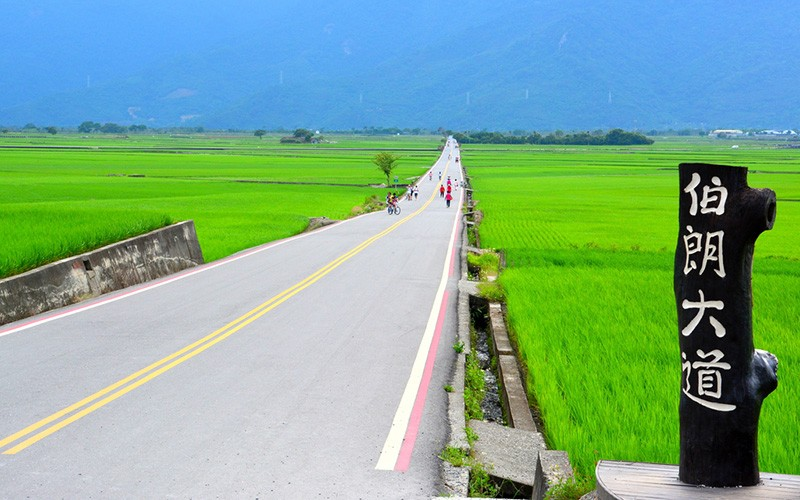
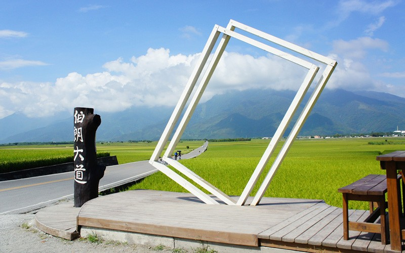
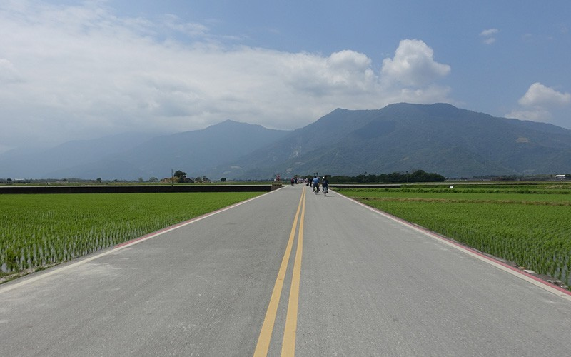
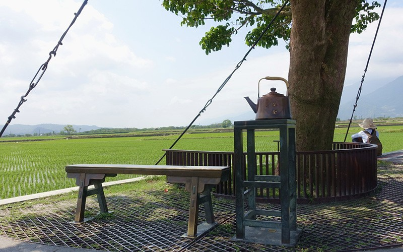
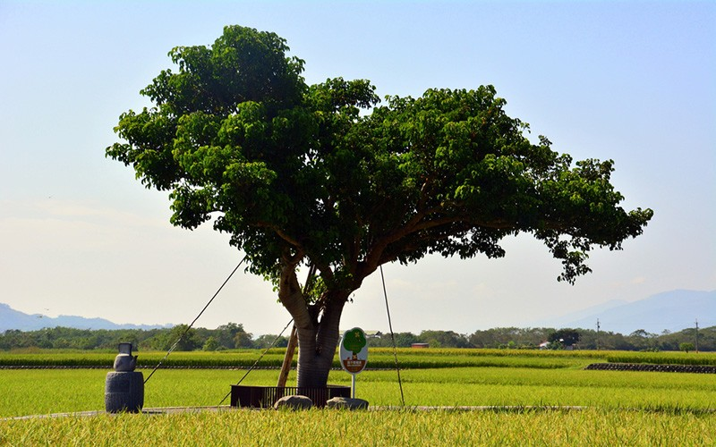
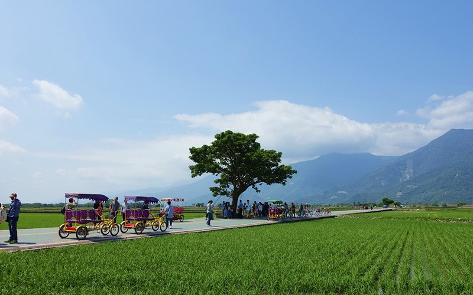
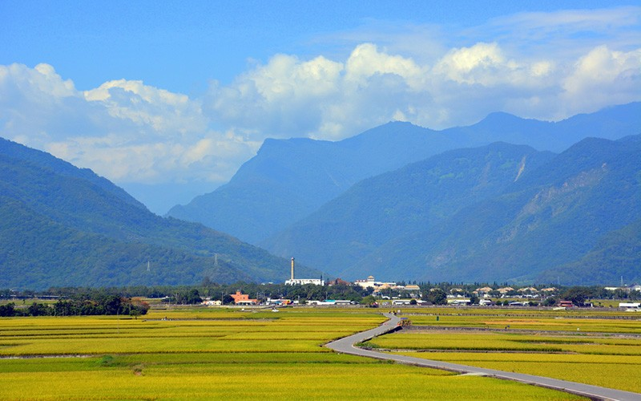
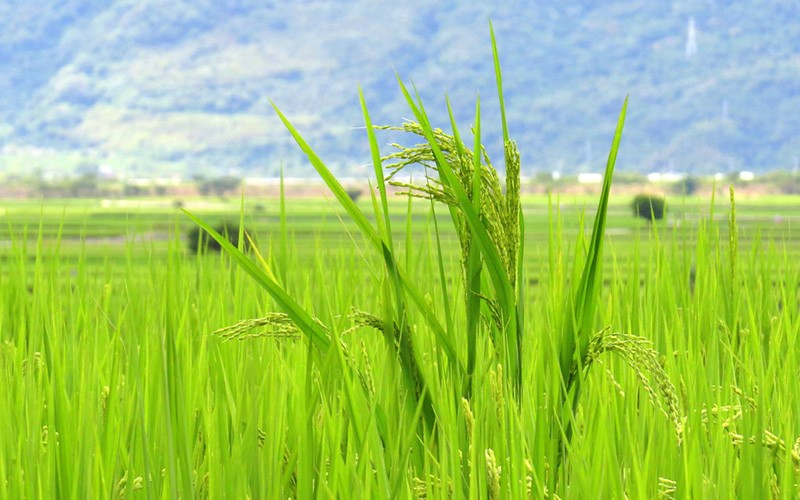
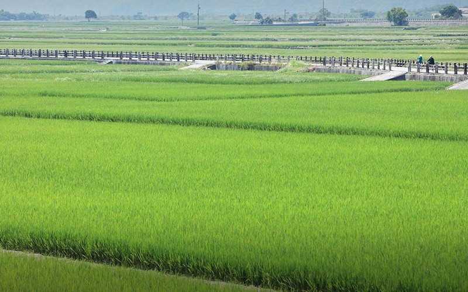
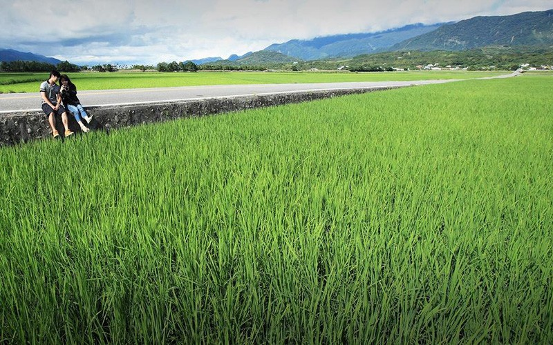
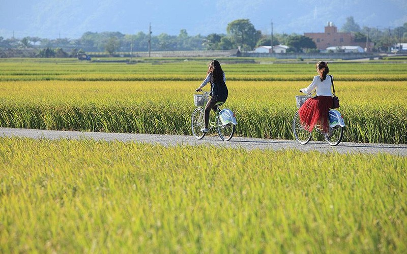
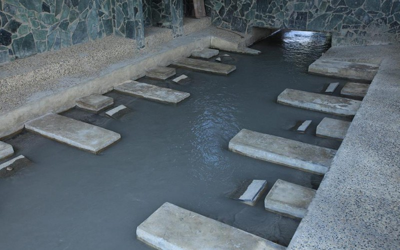
伯朗大道
臺東縣池上鄉的一條田園小路，因拍攝了伯朗咖啡的廣告而廣受歡迎，被譽為是一條「翠綠的天堂路」。廣大翠綠的稻田，路旁沒有一支電線桿，真真實實感受到一望無際，不僅有著拍照的好景色，更能帶著心靈遠離喧囂擾嚷，親身體驗一次放鬆的純粹。
介紹
伯朗大道正式名稱為錦新三號道路，因筆直兩旁無電線桿，加上收穫時道路兩旁金黃色稻穗搖曳的美麗而被伯朗咖啡選中拍攝廣告，之後金城武代言的長榮航空亦來此取景，自此聲名大噪，將這條道路暱稱為「伯朗大道」。
而伯朗大道上的一顆茄苳樹，因拍攝金城武奉茶片段而被稱為「金城武樹」吸引許多追星族及遊客前往。因伯朗大道平時為產業道路，供農民們務農時使用，前往造訪時請不要任意踐踏農田及擋住務農車輛。
特色
◆ 浮圳自行車道
池上浮圳自行車道全長8公里，沿途有多條不同的行車路線，路面平緩高低落差約5公尺，可以邊騎邊欣賞一望無際的農田風光，浮圳旁邊的大小水車古意盎然，彷彿重回四、五十年代的純樸農村，還有隨時可以停下來歇歇腳的休憩涼亭，在這裡可以騎著單車自在逍遙的享受自然與鄉村美景。
◆ 錦園洗衣亭
是當地的婦女常在晨昏時洗滌衣物、閒話家常的地方，通常是在水圳旁邊，宛如另類的「田邊俱樂部」。錦園洗衣亭為二樓建築，跨在水圳之上。社區老人在茶餘飯後，常常會在這裡閒聊。因位於池上鄉稻田區，又有「環圳自行車道」經過，位置高亢視野非常好，是有著純樸、自然特色的農村景觀。
◆ 奉茶樹（金城武樹）
伯朗大道因為長榮航空的一支廣告而紅遍全世界，而影片中金城武乘涼奉茶的那顆茄苳樹也被暱稱為「金城武樹」，成為遊客來到伯朗大道必定到訪的景點之一。
金城武樹於2014年因為麥德姆颱風侵襲而倒下，所幸經樹醫診斷後判斷可以復原，修剪枝幹後現已種回原址。
【資料來源：臺東觀光旅遊網】
伯朗大道臺東縣池上鄉的一條田園小路，因拍攝了伯朗咖啡的廣告而廣受歡迎，被譽為是一條「翠綠的天堂路」。廣大翠綠的稻田，路旁沒有一支電線桿，真真實實感受到一望無際，不僅有著拍照的好景色，更能帶著心靈遠離喧囂擾嚷，親身體驗一次放鬆的純粹。介紹伯朗大道正式名稱為錦新三號道路，因筆直兩旁無電線桿，加上收穫時道路兩旁金黃色稻穗搖曳的美麗而被伯朗咖啡選中拍攝廣告，之後金城武代言的長榮航空亦來此取景，自此聲名大噪，將這條道路暱稱為「伯朗大道」。而伯朗大道上的一顆茄苳樹，因拍攝金城武奉茶片段而被稱為「金城武樹」吸引許多追星族及遊客前往。因伯朗大道平時為產業道路，供農民們務農時使用，前往造訪時請不要任意踐踏農田及擋住務農車輛。特色浮圳自行車道池上浮圳自行車道全長8公里，沿途有多條不同的行車路線，路面平緩高低落差約5公尺，可以邊騎邊欣賞一望無際的農田風光，浮圳旁邊的大小水車古意盎然，彷彿重回四、五十年代的純樸農村，還有隨時可以停下來歇歇腳的休憩涼亭，在這裡可以騎著單車自在逍遙的享受自然與鄉村美景。錦園洗衣亭是當地的婦女常在晨昏時洗滌衣物、閒話家常的地方，通常是在水圳旁邊，宛如另類的「田邊俱樂部」。錦園洗衣亭為二樓建築，跨在水圳之上。社區老人在茶餘飯後，常常會在這裡閒聊。因位於池上鄉稻田區，又有「環圳自行車道」經過，位置高亢視野非常好，是有著純樸、自然特色的農村景觀。奉茶樹（金城武樹）伯朗大道因為長榮航空的一支廣告而紅遍全世界，而影片中金城武乘涼奉茶的那顆茄苳樹也被暱稱為「金城武樹」，成為遊客來到伯朗大道必定到訪的景點之一。金城武樹於2014年因為麥德姆颱風侵襲而倒下，所幸經樹醫診斷後判斷可以復原，修剪枝幹後現已種回原址。
Brown Avenue A small road through a field in Chishang Township of Taitung County has gained huge popularity due to a Mr. Brown Coffee TV commercial. This road is praised as a “green road to paradise.” The road has no utility poles to get in the way of the view, which features vast green paddy fields that stretch as far as the eye can see. This place is perfect for photography, and it can lead our minds away from the hustle and bustle, allowing us to experience pure relaxation. Introduction The official name of Brown Avenue is No. 3 Jinxin Road. Mr. Brown Coffee used this road for its ad because it is straight, has no utility poles, and features beautiful golden ears of rice dancing in the breeze along both sides during harvest. EVA Air also decided to shoot some advertisements with Takeshi Kaneshiro here, and the road has since shot to fame and been nicknamed Brown Avenue. Also, a Bishop wood tree on Brown Avenue is called the Takeshi Kaneshiro Tree because it showed up in the part of the ad that featured Takeshi Kaneshiro serving himself some tea. It attracts a lot of fans and tourists. Because Brown Avenue is an industrial road for farmers, please do not enter the fields or block the farmers’ vehicles when you visit here. Introduction of Features Fuzun Bike Path Chishang’s Fuzhen Bike Path is 8-kilometers long. There are many different cycling routes along the way, and the trails are fairly level, as the height only fluctuates by 5 meters. Tourists can ride their bicycles through endless fields. The waterwheels in Fuzhen have an antique appearance, which makes this place feel like a simple agricultural village from the 1950s and 1960s. There are also pavilions where you can rest at any time. Enjoy nature and rural beauty while comfortably cycling here. Jinyuan Laundry Pavilion A laundry pavilion is where local women wash clothes and make small talk in the morning or evening; they usually do this beside a ditch like a conventional club. Jinyuan Laundry Pavilion is a second-floor room that stretches over a ditch, and the senior citizens in the community often chat there. It is located in the paddy field zone in Chishang Township, with Huanzhen Cycling Road passing by. Being high up, the pavilion offers an excellent view of a simple agricultural village. Tea Serving Tree (Takeshi Kaneshiro Tree) Brown Avenue shot to fame around the world due to an EVA Air commercial. The Bishop wood tree under which Takeshi Kaneshiro served himself some tea is nicknamed Takeshi Kaneshiro Tree. This tree has become one of the must-see attractions for tourists to Brown Avenue. The Takeshi Kaneshiro Tree fell down in 2014 due to Typhoon Matmo. However, a tree doctor diagnosed it as able to recover. After its limbs were pruned, it was planted back at its original site.
伯朗大道 台東県池上郷の農村にあるこの小道。伯朗珈琲の広告ロケ地として広く人気を集め、「緑の楽園の道」と呼ばれています。道端に電柱が1本もなく、緑色の水田が見渡す限りに広がり、カメラに収めたくなる美しい景色が見られるのみならず、都会の喧騒を忘れさせ、リラックスを実感させる清らかさが漂っています。 紹介 伯朗大道の正式な名称は錦新三号道路。まっすぐに伸び、両側に全く電柱がないうえ、収穫シーズンは道の両側で黄色い稲穂が揺れる様が美しいことから、伯朗珈琲の広告ロケ地として選ばれました。その後、金城武がイメージキャラクターを務めるエバー航空がここをバックにコマーシャルを撮影してからさらに知名度が高まり、「伯朗大道」の名で親しまれています。 また、伯朗大道にあるアカギの木は、金城武がお茶を口に近づけて飲むシーンの撮影に使われたことから「金城武の木」と呼ばれ、大勢のファンや観光客が参観に訪れます。普段、伯朗大道は農家が作業に使用していますので、みだりに田畑に足を踏み入れたり農業用車両の進行を妨げたりしないようご注意ください。 特色 浮圳サイクリングロード 池上浮圳サイクリングロードは、複数のコースが設けられた総距離8キロメートル、路面の高低差約5メートルのなだらかな道で、自転車を走らせながら広々とした田畑の風景を眺めて楽しむことができます。用水路の傍らにある大小の古い水車は、1950～60年代頃の素朴な農村を彷彿させます。自転車を停めて足を休める休憩所も随所にあり、自転車に乗って自由気ままに自然と田舎の美しい風景を楽しむことができます。 錦園洗衣亭 当地の女性が朝晩の洗濯や井戸端会議をする用水路の傍は、一種独特な「田辺倶楽部」です。錦園洗衣亭は、用水路を跨ぐ二階建ての建物。地域のお年寄りが食後の休憩時間、ここに来て雑談を楽しんでいます。池上郷の水田地区に位置し、「環圳サイクリングロード」が通過するこの場所は、高台で大変見晴らしがよく、素朴で自然に溢れる農村の景色を楽しむことができます。 奉茶樹（金城武の木） 伯朗大道はエバー航空のコマーシャル撮影に使用されたことで世界中から注目されました。金城武が木陰で涼みながらお茶を口に近づけて飲むシーンに映るこのアカギは「金城武の木」と呼ばれ、伯朗大道の必見スポットになりました。 「金城武の木」は2014年の台風第10号の害により倒れてしまいましたが、幸いなことに樹医により回復可能であると診断され、剪定を済ませた後、元の場所に植えなおされました。